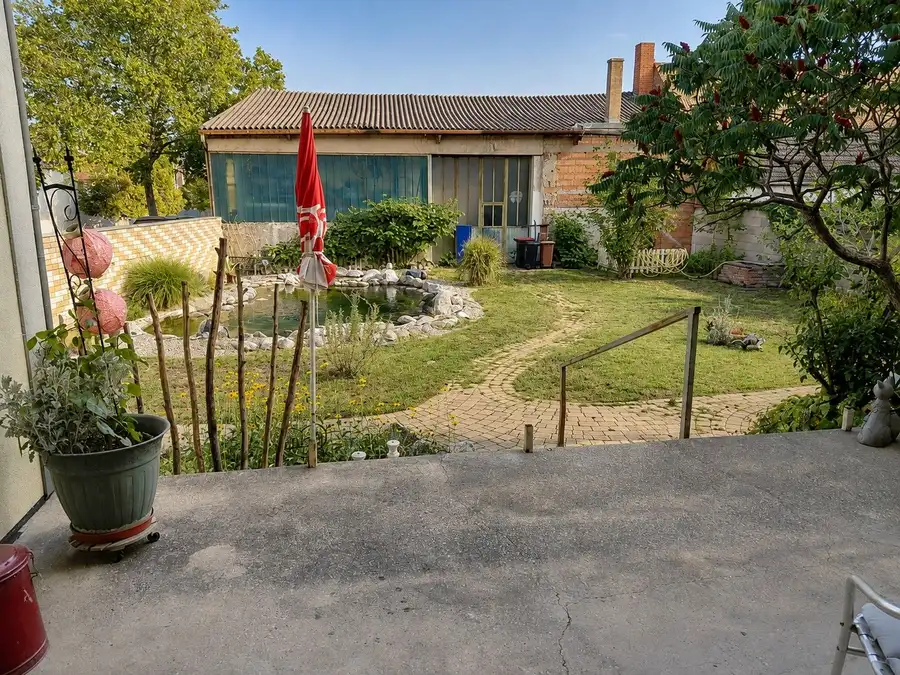
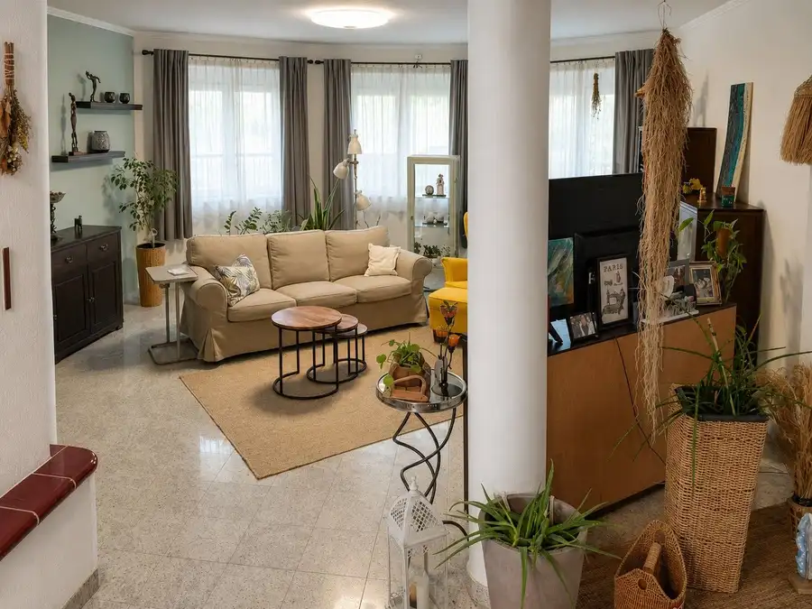
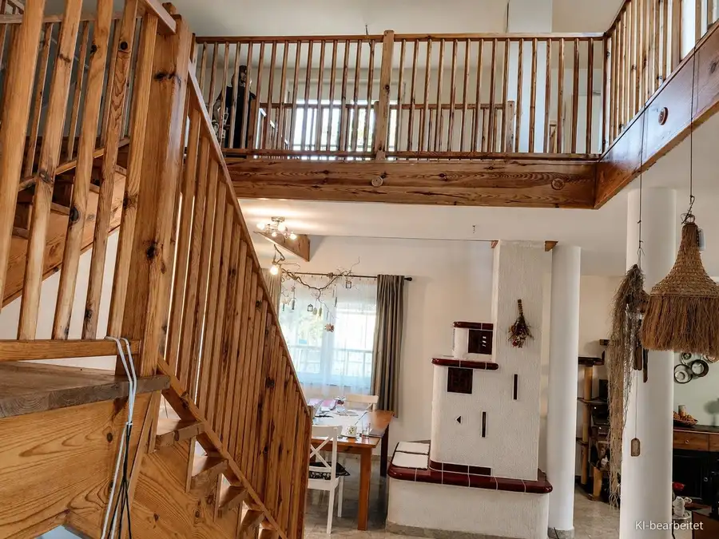
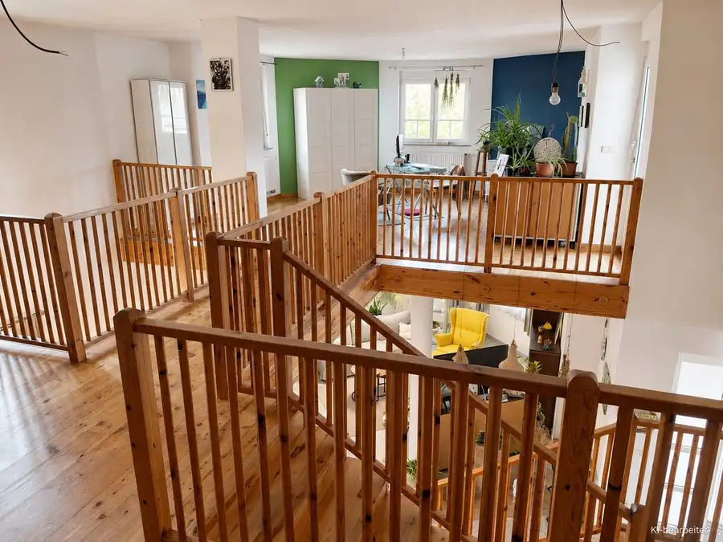
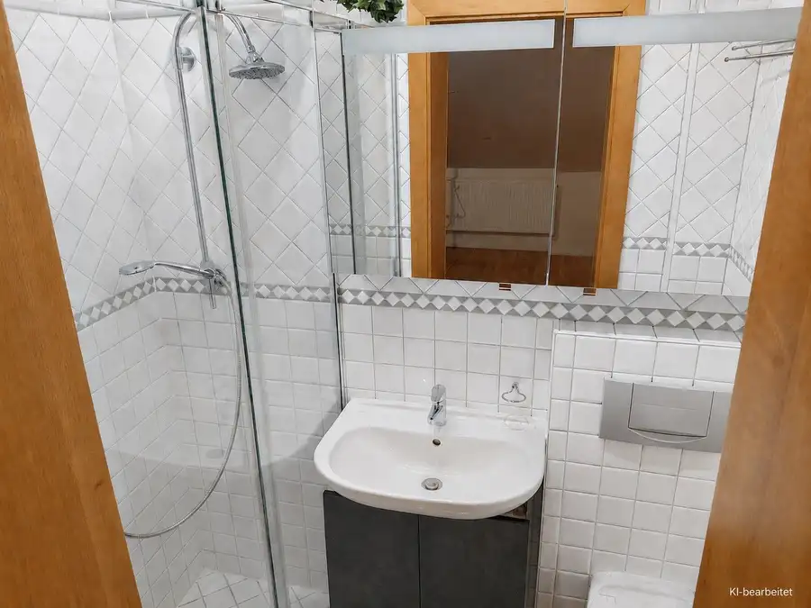
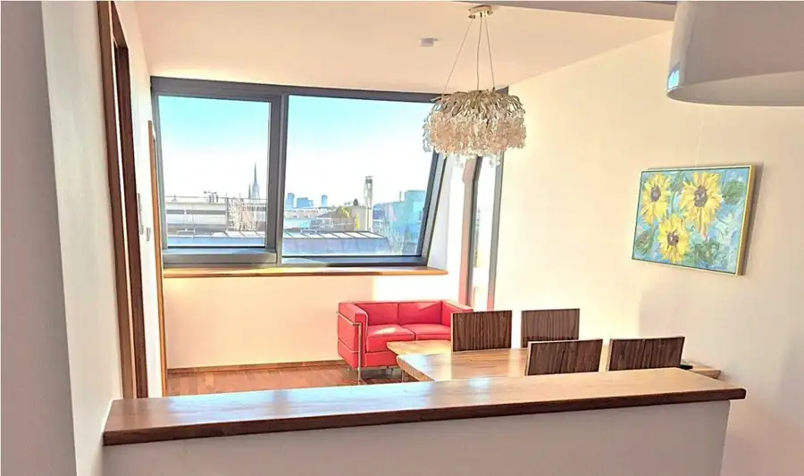
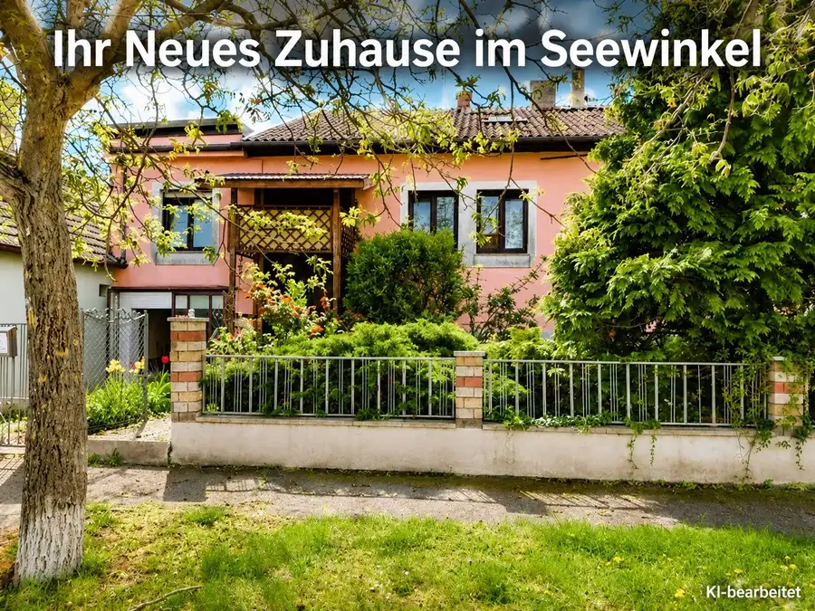
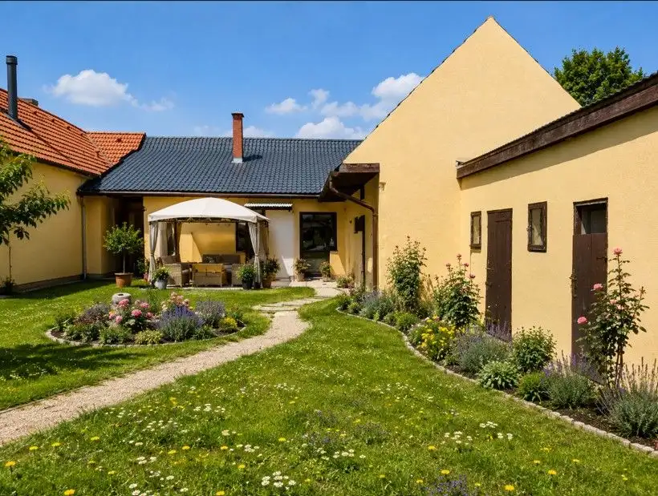

Predaj · Rodinné domy
Predaj rodinného domu, Neusiedl am See
Podersdorf am See
590 000 €711 € za m²





- Dispozícia9-izbový
- Plocha830 m²
- Poschodie0. z 2
- Stavpôvodný
- Vlastníctvoosobné
- Energetická triedaC
O nehnuteľnosti
...
Parametre
- Rozloha pozemku
- 830 m²
- Celková rozloha
- 830 m²
- Úžitková plocha
- 830 m²
- Poschodie
- prízemie
- Počet poschodí
- 2
- Počet izieb
- 9
- Vlastníctvo
- osobné
- Stav
- pôvodný
- Status
- aktívne
- Odvoz odpadu
- áno
- Voda
- studňa a vodovod
- El. napätie
- 230/400V
- Plyn
- áno
- Kúpeľňa
- áno
- Vykurovanie
- vlastné – kombinované
- Balkón
- áno
- Terasa
- áno
- Pivnica
- áno
- Garáž
- áno
- Parkovanie
- áno
- Inžinierske siete
- áno
- Zariadenie
- čiastočne
- Strecha
- pôvodná
- Bazén
- exteriérový
- Krb
- áno
- Energetický certifikát
- C
- Terén
- rovina
- Prístupová cesta
- asfaltová cesta
- Dátum zverejnenia
- 2026-08-31
Kde to je
Ďalšie ponuky
Celá ponukaMohlo by Vás zaujímať

BytNové 965 000 €Predaj 2-izbového bytu, Lange Gasse, Lange Gasse, Wien 8., Josefstadt Wien 8., Josefstadt 1,562.5 m²
Rodinné domyNové 249 900 €Predaj rodinného domu, Neusiedl am See Illmitz 5-izbový131.5 m²
Rodinné domyNové 205 000 €Predaj rodinného domu, Neusiedl am See Tadten 5-izbový537 m²